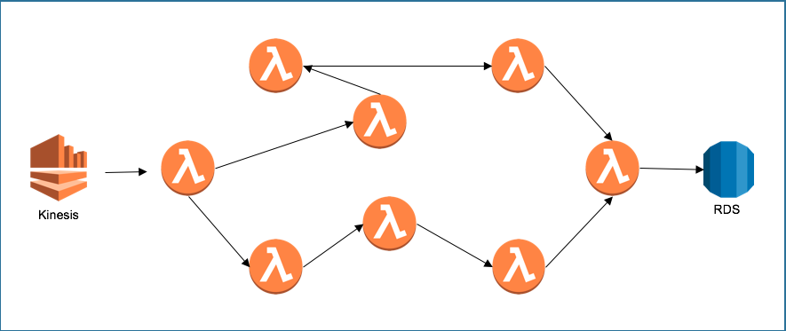
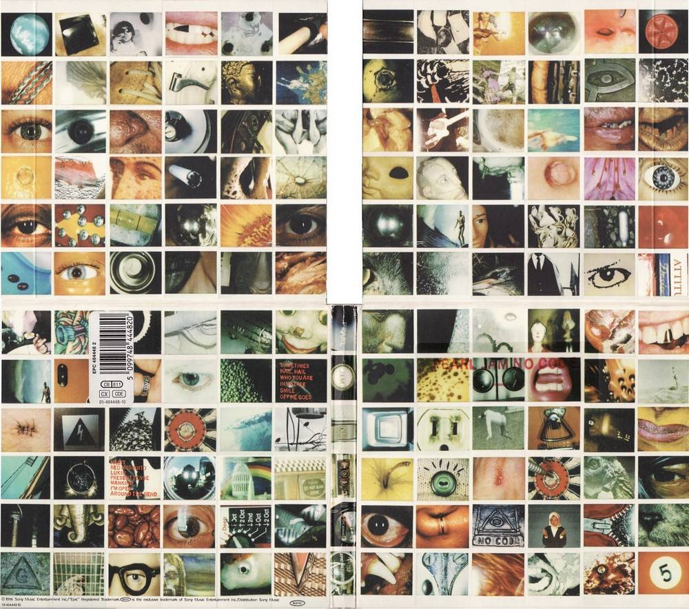
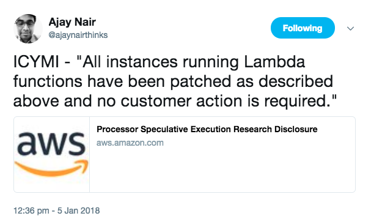
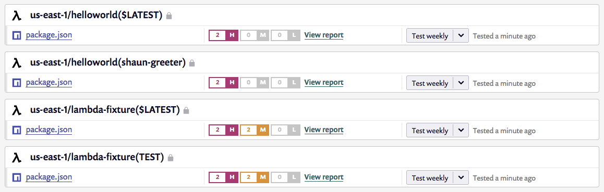
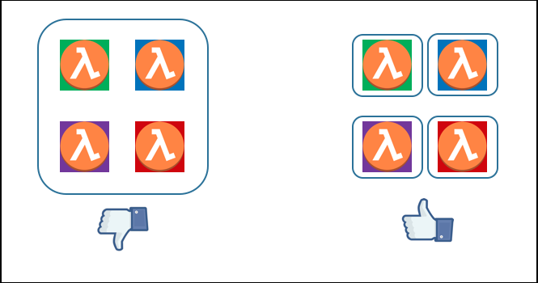
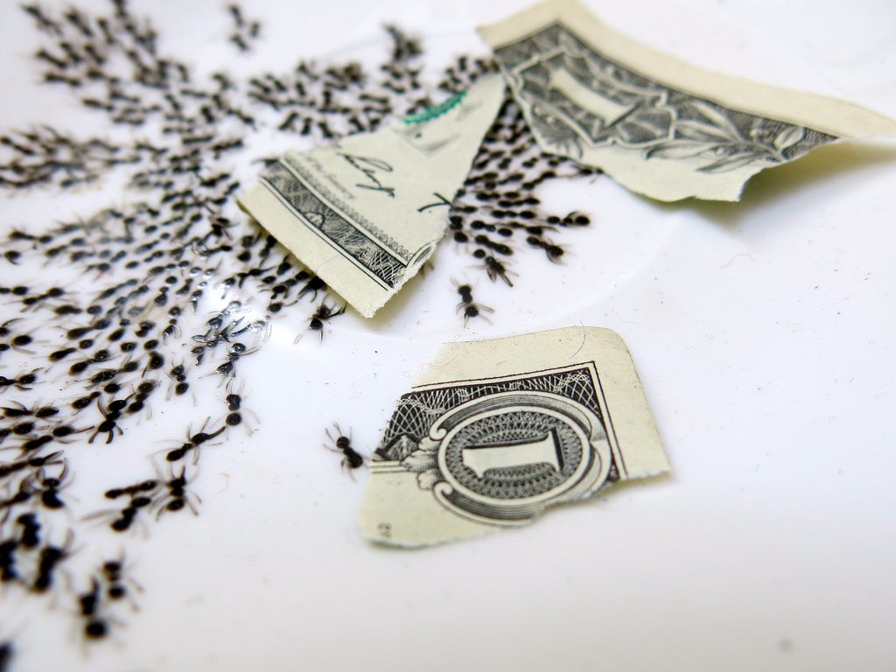
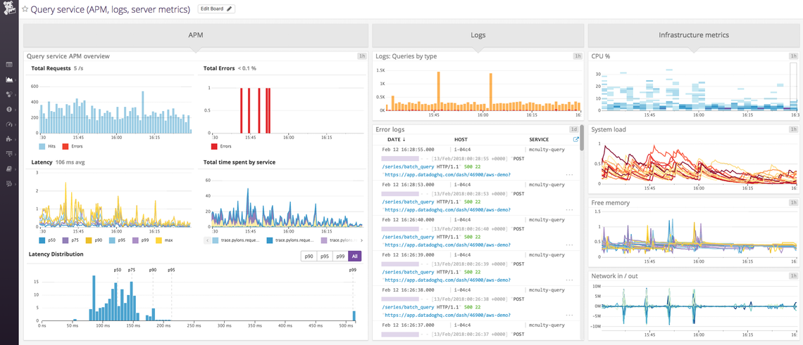
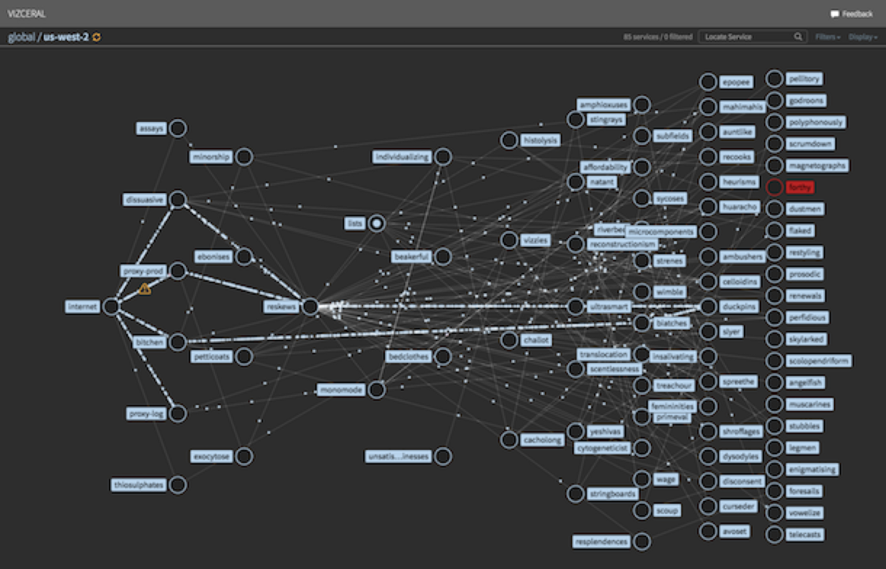
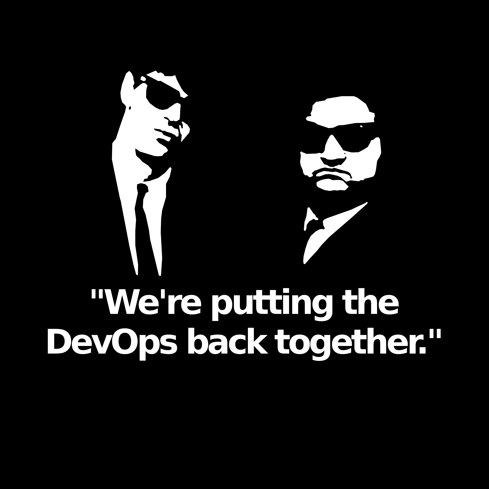

Look Ma! No servers...

Now how are we going to feed ourselves son?!

Smells like Serverless
- You don’t make infrastructure choices
- How big... What instance type... Which subnet...
- You don’t make capacity choices
- Do I need autoscaling... How many instances do I need...
- You don’t make software choices
- Which OS... What patch level...
- You don’t pay for idle capacity

Shades of serverless
- Compute
(AWS Lambda, Azure Functions, Google Cloud Functions, Stdlib...)
- Database
(DynamoDB, Firebase, FaunaDB...)
- Containers
(Fargate, GKE, Azure Container Service...)
- PaaS
(Heroku, OpenShift, Cloud Foundry...)
- Others
(Algorithmia, Auth0, Stripe, Cloudflare workers, Auth0 webtasks...)
Serverless function Execution Models

Asynchronous workflows
EVENTS AND STREAMS

Rube Goldberg architecture

Coordination

Just because you can doesn't mean you should

Make it Async

NoCode Nirvana?

Noops Nirvana?


about
Deployments
Tool Sprawl
Function Sprawl
Pipelines
Shared code, infrastructure
about
Security

Vulnerable Libraries

Function boundary is your perimeter

DoS attacks

about
Observability
Four Pillars
- Monitoring
- Alerting/Vizualization
- Distributed systems tracing infrastructure
- Log aggregation/analytics
Logs


Developer ∙ Operations ∙ Engineering

Serverless first…
a loosely held strong opinion